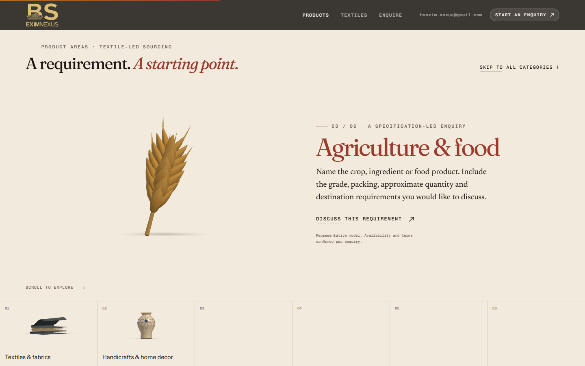
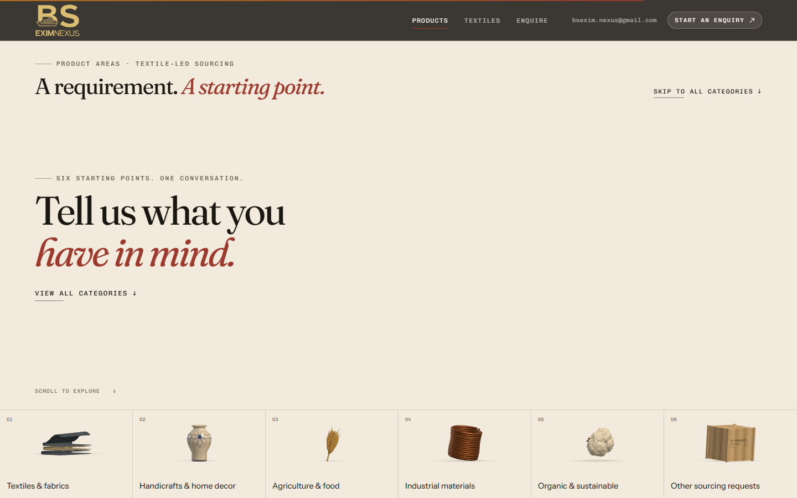
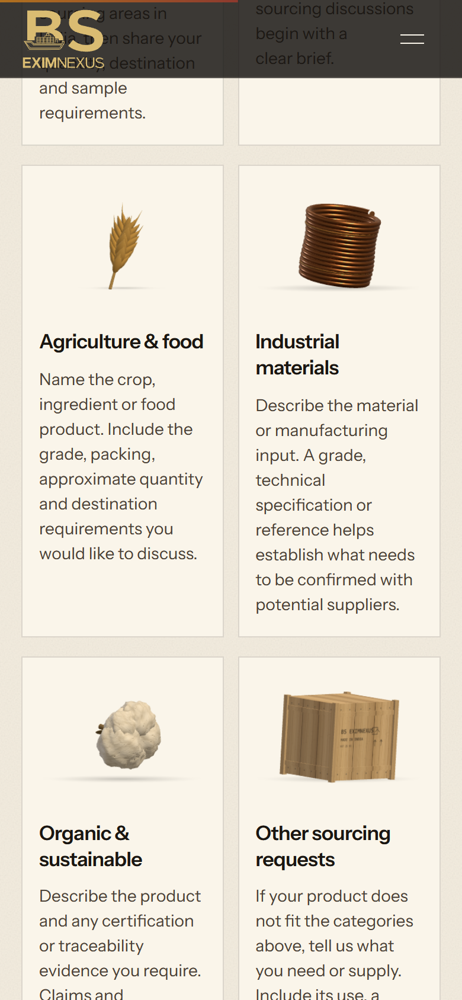

Desktop chapter and six-box dock

Actual production build at 1440 × 900. Scroll forward and reverse on the website to follow the same specimen into box three.
Docked view, including the other five unchanged objects.Phone card

390 × 844 viewport, captured at DPR 2 and displayed at 390 CSS px. The wheat stage measures 168.61 × 134.88 CSS px.The whole card links to the Agriculture & food enquiry. Phone motion uses the existing 4.5-second section window, then holds its presented pose.
Local review only. Physical Android, iPhone/Safari and public deployment have not been verified.